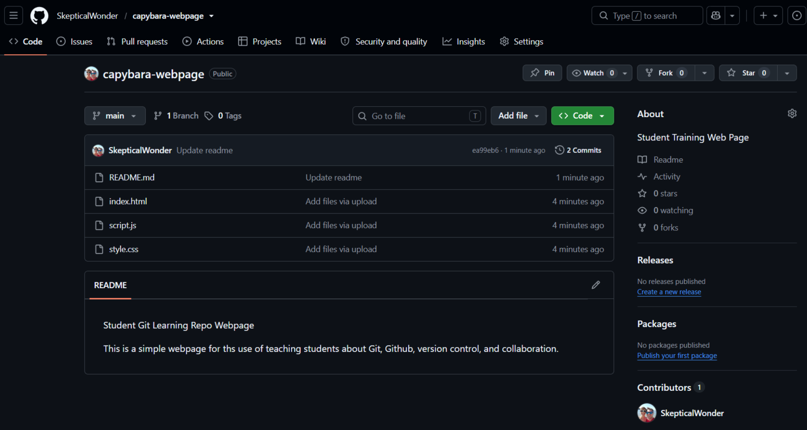
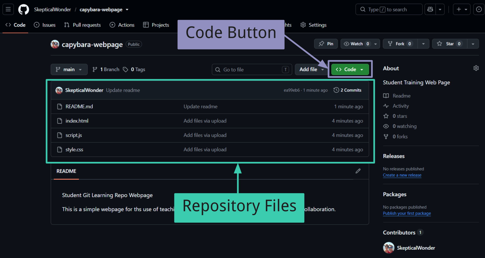
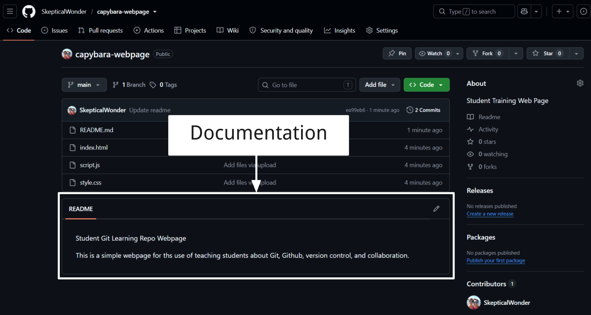
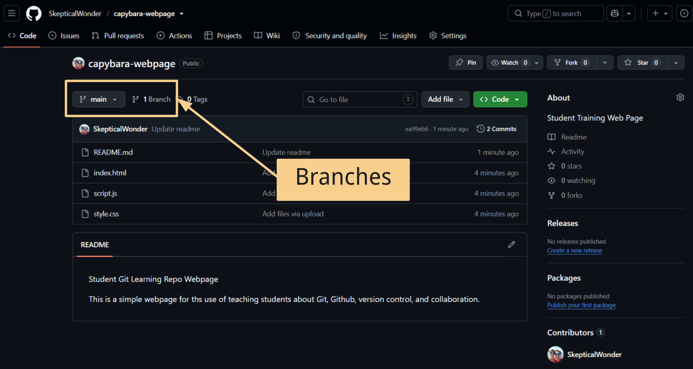
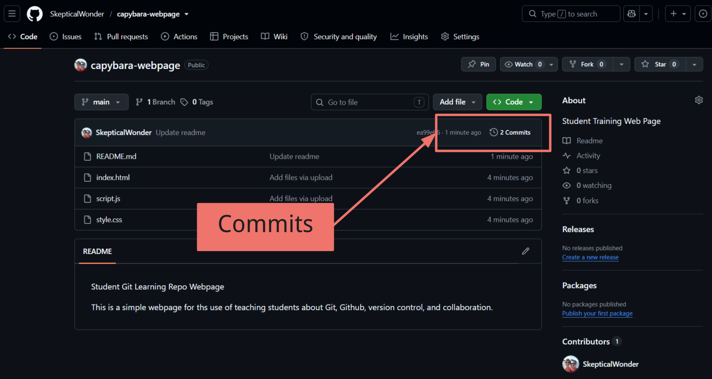
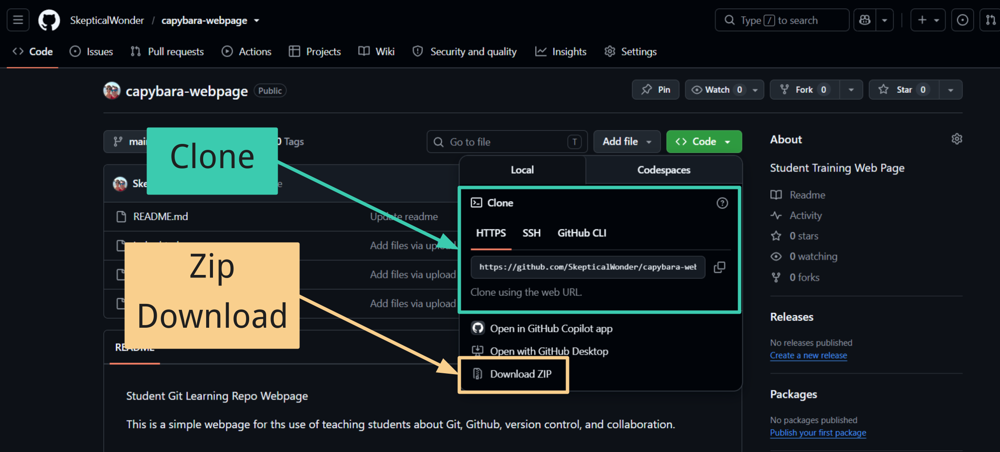
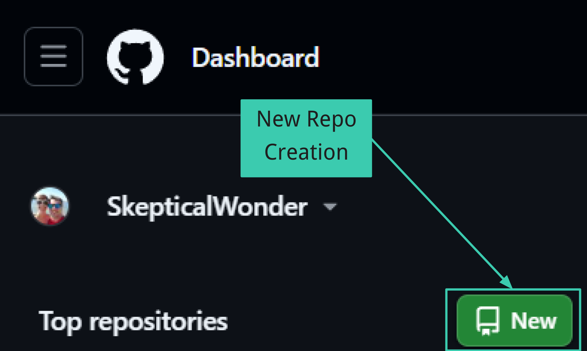
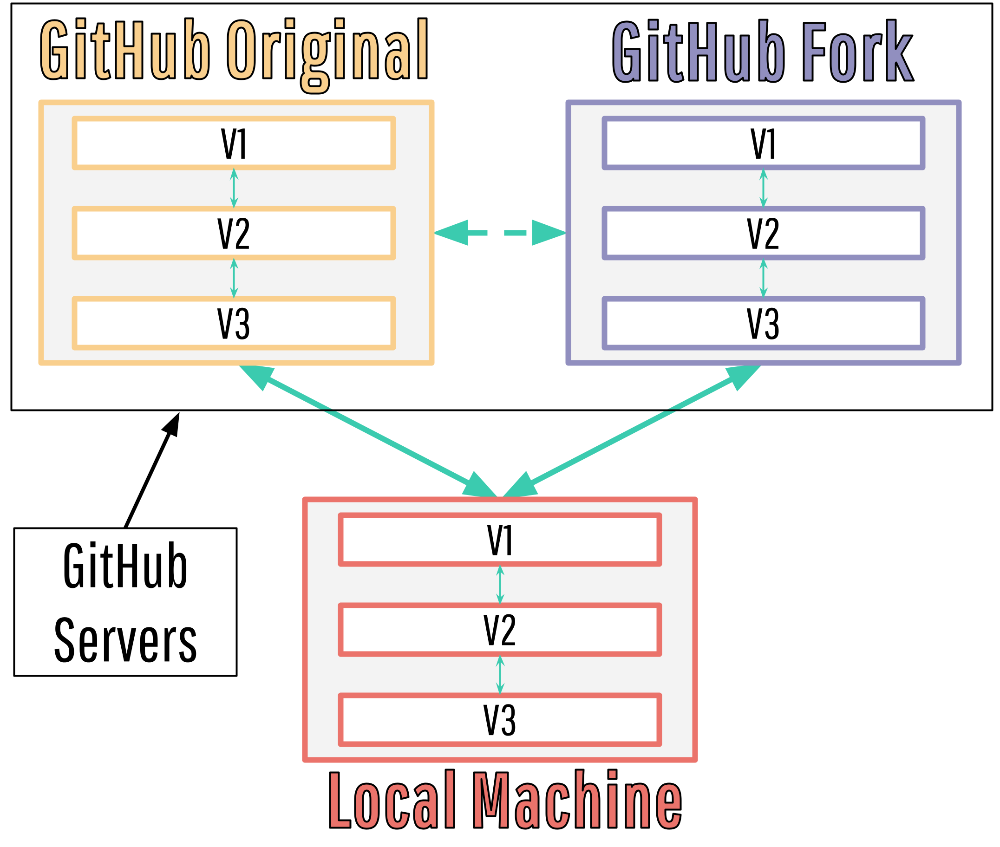
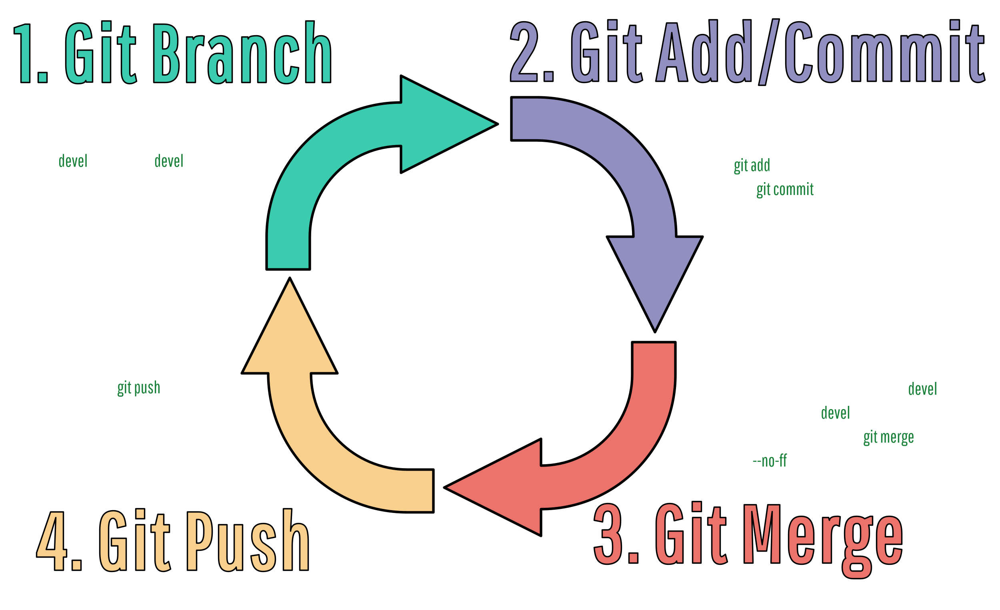

Git
A version-control tool.
A beginner module for high school interns learning how Git and GitHub track project history, support teamwork, and protect shared code.
Version-control software installed on your computer. It tracks changes and saves checkpoints called commits.
A web platform that hosts Git repositories so teams can share, review, and collaborate on code.
Git can be used by itself, but GitHub makes collaboration much easier.
See what changed, when it changed, and who changed it.
Save meaningful checkpoints with commit messages.
Return to earlier versions when something breaks.
Try ideas without damaging the shared project.
Review history to understand how a project developed.
Combine work from multiple contributors.
Store repositories online so team members can access the project.
Allow multiple developers to contribute to the same project.
Use pull requests to discuss, review, and approve changes.
Track bugs, tasks, and ideas with Issues and Projects.
Keep a remote copy of the repository and its history.
Share websites and project documentation with GitHub Pages.
Where to Type Git Commands
Use the down arrow to explore different git commands.
Initializes a new Git repository in the current folder.
git initUse this when a project folder is not already connected to Git.
Downloads a remote repository and creates a local copy on your computer.
git clone https://github.com/username/repository.gitUse this when the project already exists on GitHub or another remote service.
Shows which files have changed, which files are staged, and which files are untracked.
git statusRun this frequently so you know what Git sees before committing.
Selects changes that will be included in the next commit.
git add filename.htmlgit add .The first command stages one file. The second stages all current changes.
Creates a new commit containing the changes that have been staged.
git commit -m "Add hydration dashboard"A good commit message briefly explains what changed.
Displays previous commits, including messages, authors, dates, and identifiers.
git loggit log --oneline
The --oneline option creates a shorter, easier-to-scan history.
Branches allow developers to work on different versions or features without immediately changing the main project.
git branchgit branch new-featureThe first command lists branches. The second creates a new branch.
Switches the working folder to a specified branch or commit.
git checkout new-featureA newer alternative for switching branches is:
git switch new-featureBrings changes from one branch into the branch you are currently using.
git switch main
git merge new-featureSwitch to the destination branch before running the merge.
Downloads new changes from the remote repository and merges them into the current local branch.
git pullPull before beginning work so your local project is up to date.
Sends committed changes from the local repository to the remote repository.
git pushOnly committed changes are uploaded. Uncommitted edits remain on your computer.
Shows which files have changed, which files are staged, and which files are untracked.
git statusRun this frequently to understand the current state of your repository.
Displays previous commits, including commit messages, authors, dates, and commit hashes.
git loggit log --oneline
The --oneline option creates a shorter, easier-to-read history.
Shows the commit hash, author, timestamp, and content associated with each line in a file.
git blame filename.jsUse this to understand when and why a particular line was changed.
Restores a file in your working directory to its last committed version.
git restore filename.jsThis permanently removes uncommitted changes from the selected file.
Creates a new commit that reverses the changes from an earlier commit without rewriting project history.
git revert COMMIT_HASHThis is usually the safest option for undoing work that has already been shared.
Moves the current branch and HEAD pointer to a selected commit.
git reset --mixed COMMIT_HASHKeeps changes staged.
git reset --soft COMMIT_HASHKeeps changes but removes them from staging.
git reset --mixed COMMIT_HASHDeletes later commits and working-directory changes.
git reset --hard COMMIT_HASHA repository, or repo, is a project folder tracked by Git.
GitHub is a online platform for creating, managing, and sharing repositories.
It uses Git to provide distributed version control, which is form of version control
in which the complete codebase, including its full history, is mirrored on every developer's computer.
The repo is held in 2 places.
The copy on your computer where you edit and test files.
The online copy hosted on GitHub for sharing and collaboration.
README.md
Use the down arrow to explore the interface.
The file list contains the project code, images, documentation, and other assets for the selected branch.
The green Code button opens the clone and download options.

At the bottom of repos you can usually find a README.md file with information about the repo.

The branch selector shows which version of the repository you are viewing and lets you switch branches.

In this example, the current branch is main.
The commit count opens the change history for the branch you are viewing.

Commit history shows what changed, who changed it, and the message used to describe the change.
Click the green Code button to open these options.

Copy the HTTPS URL when you want a Git-connected local copy.
Use this when you only need the files and do not need Git history or syncing.
We will be covering ways of creating repos from prexisiting repos, but you can create a new repo through either a terminal command or through a browser.
# 1. Navigate to your project folder
cd /path/to/your/project
# 2. Initialize the Git repository
git init
# 3. Stage all current files
git add .
# 4. Create your first commit
git commit -m "Initial commit"
Forks and branches are 2 ways for developers to experiment without immediately changing the main project. Both make copies of repos for developer use but do it in importantly different ways.
An isolated workspace inside an existing Git repository.
A separate copy of a repository stored under another GitHub account.
Use the down arrow to explore how each one works.
A branch creates a separate line of development within the same repository.
Branches are normally used by people who already have permission to contribute to the repository.
git switch -c feature-nameCreate and enter a new branch.
git add .
git commit -m "Add feature"Stage and commit the work.
git push -u origin feature-nameUpload the branch to GitHub.
A pull request can then be opened to review and merge the branch into the main project.
The main branch and feature branch belong to the same project.
Repository collaborators can view and work with the branch.
A fork creates a separate GitHub repository under your own account.
Forking is a GitHub feature. Git itself does not include a git fork command.

A fork is a separate GitHub repository, while a clone is the copy stored on your local computer.
The original repository is commonly added as a second remote named
upstream.
git remote add upstream ORIGINAL-REPOSITORY-URLgit fetch upstream
git switch main
git merge upstream/mainThis keeps your fork synchronized with changes made to the original project.
Branch: Inside the original repository.
Fork: A separate repository.
Branch: Usually requires write access.
Fork: Does not require write access.
Branch: Internal development.
Fork: External or open-source contributions.
You are a member of the development team and need to add a dashboard feature.
Use a branch.
You found an open-source project and want to propose a fix without having write access.
Use a fork.
A separate workspace inside the same repository.
A separate copy of the repository under another account.
Branches separate the work. Forks separate the repository.

Contribute to the capybara webpage using GitHub and Git.
Repository: SkepticalWonder/capybara-webpage
Open the repository on GitHub and click Fork to make your own copy.

Create a new branch in your fork for your changes.

Copy the HTTPS clone link from your fork, then clone it to your computer.
git clone https://github.com/SkepticalWonder/capybara-webpage.git
Open the cloned folder/files in Visual Studio Code.

Add your name to README.md and save the file.
Updated by "Your Name"
Stage the changed file and save a commit.
git status
git add README.md
git commit -m "Add my name to README"Image: Terminal showing git status, add, and commit.
images/stage-commit.png
Upload your branch and commit to GitHub.
git push -u origin your-branch-nameImage: Terminal showing a successful git push.
images/git-push.png
On GitHub, open a pull request from your branch back to the original repository.
Image: GitHub Compare & pull request page.
images/open-pr.png